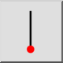
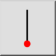
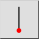
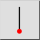

Ligne verticale
Barre d'outil / icône :
 

Menu : Dessin > Ligne > Ligne verticale
Raccourci : L, V
Commandes : linevertical | lv
Ceci est une traduction automatique.
Barre d'outil / icône :
 

Menu : Dessin > Ligne > Ligne verticale
Raccourci : L, V
Commandes : linevertical | lv
Utilisez cet outil pour créer des lignes verticales. Cet outil est utilisé comme l' outil pour les lignes à un angle donné, sauf que l'angle est fixé à la verticale.